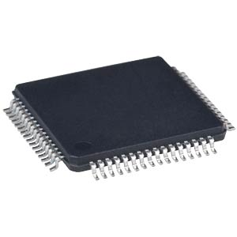
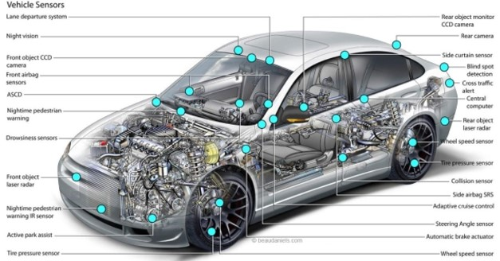

Prototypage (rapide)
Table of Contents
Microcontroller
 Un microcontroller (µC) est une puce programmable en C ou C++ pour la majorité des cas. En première approche, on peut voir cette puce comme un micro ordinateur, car elle intègre non seulement une unité de calcul (micro processeur), mais egalement des périphériques. En voici quelques exemples: mémoire FLASH, mémoire RAM, convertisseur (NA ou AN), controller de bus… Du fait que tout soit intégré dans une puce, les microcontroller sont compacts, économes en énergie et donc tout désigné pour être embarqué. La plupart du temps le µC va s'interfacer avec des capteurs dont le rôle est de capter des grandeurs physiques. En général, les variations de ces grandeurs physiques feront varier une resistance, une capacité ou inductance qui au final pourra être convertie en tension (ou en courant), et donc exploitable par le µC.
| Capteurs | Grandeur physique |
|---|---|
| Bouton | Pression |
| Potentiometre | Angle |
| Thermoresistance | Temperature |
| Photodiode | Lumière |
| … | … |
De là, il pourra réaliser un traitement et des actions, via des actionneurs auquels il est également interfacer.
| Actionneurs |
|---|
| LED |
| Servomoteur |
| Moteur |
| Ecran |
| … |
Dans d'autre configurations, le µC et les capteurs forment un sous système intégré dans un système plus large. Ce sous système n'effectue aucune action à part renvoyer ses données à un autre sous sytème. Par exemple dans une automobile ou en IOT.

En général le µC se trouve sur une carte électronique où l'on pourra trouver le minimum pour travailler comme des boutons, des LEDS et des connecteurs… La plus connues de ces cartes est la carte ARDUINO UNO, architecturée autour d'un µC ATmega328P.